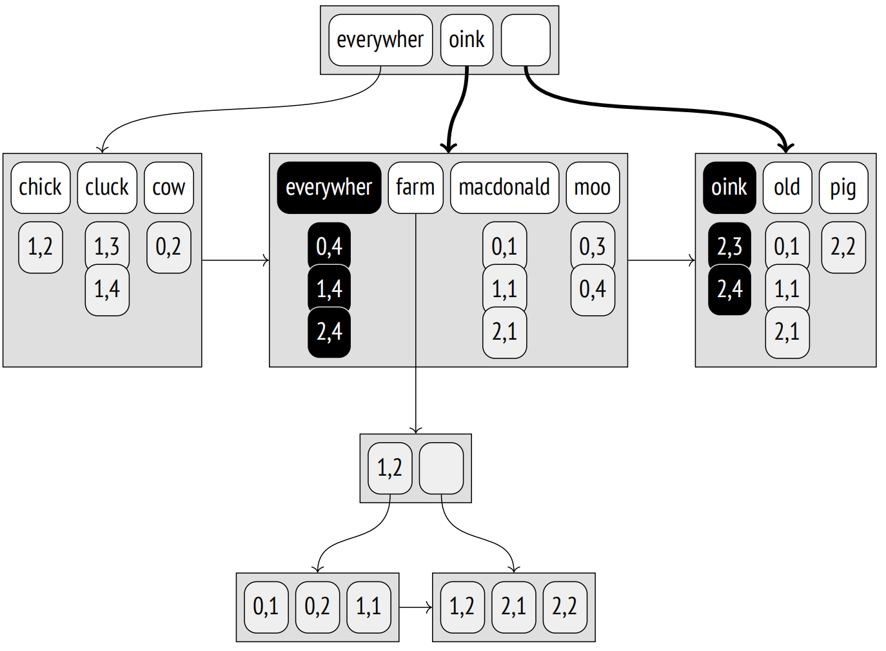
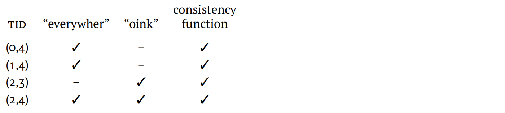
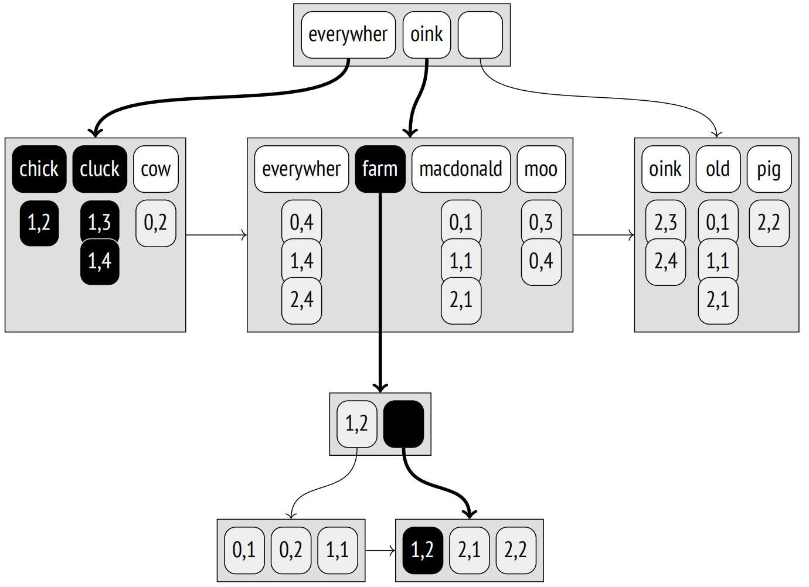
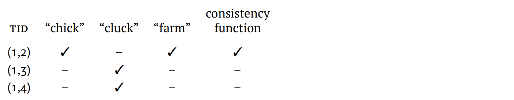
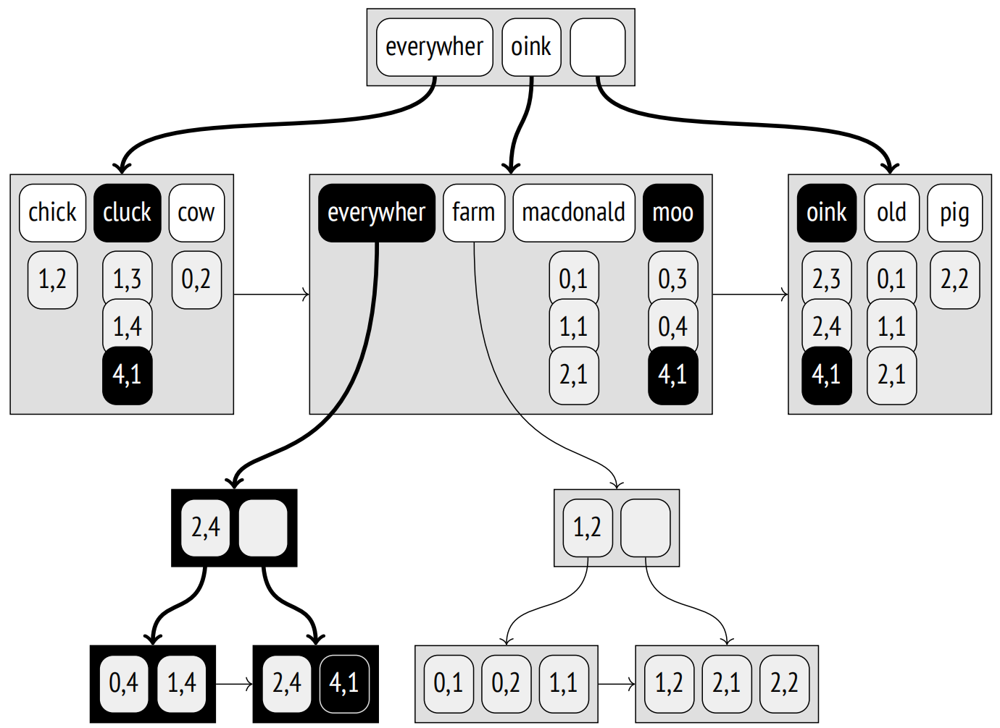
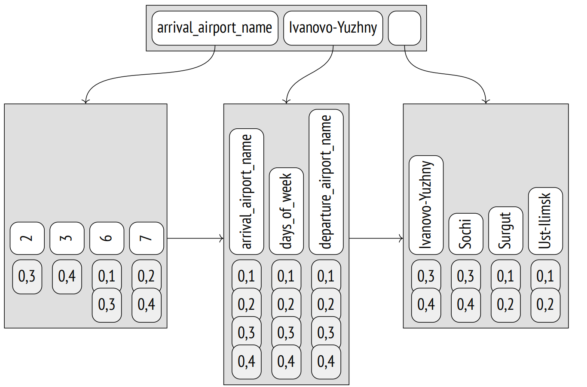
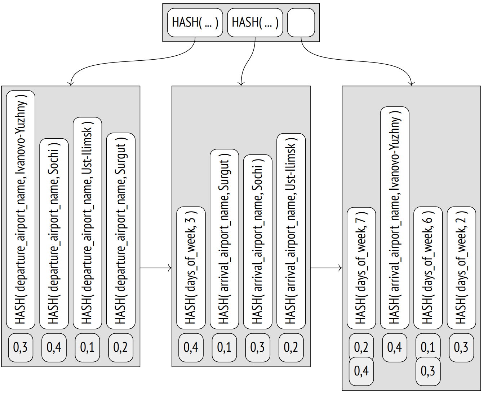

第 28 章：GIN
28.1 总览
根据作者的说法，GIN 代表的是一种强大而不屈的精神，而不是指一种酒精饮料。1 但 GIN 也有一个正式的解释：其缩写的全称是广义倒排索引。
GIN 访问方法用于表示由独立元素组成的非原子值的数据类型 (例如，在全文检索的上下文中，文档由词素组成)。与 GiST 不同，GiST 将值作为一个整体进行索引，GIN 仅对其元素进行索引；每个元素都映射到所有包含它的值。
我们可以将这种访问方法与书籍的索引进行比较，书籍索引包含所有重要的术语，并列出了这些术语提及的所有页面。为了方便使用，它需要按字母顺序编排，否则将无法快速查找。同样，GIN 也基于所有复合值的元素均可以排序这一事实；其主要数据结构是 B 树。
元素的 GIN 树实现比常规 B 树的实现要简单：它旨在包含相对较小且重复多次的元素集合。
此假设得出两个重要结论：
-
一个元素在索引中只存储一次。
每个元素都映射到一个 TIDS 列表，称为 posting list。如果这个列表很短，它会与元素一起存储；较长的列表则被移动到一个单独的 posting tree 中，这实际上是一颗 B 树。就像元素树一样，posting list 是有序的；从用户的角度来看这并不重要，但这有助于加速数据访问和减小索引大小。
-
从树中移除元素没有意义。
即使某个特定元素的 TIDS 列表为空，相同元素很可能作为其他值的一部分再次出现。
因此，索引是一棵元素树，其叶条目绑定到平面列表或 TIDS 树上。
就像 GiST 和 SP-GiST 访问方法一样，GIN 可以通过操作符类的简化接口为各种数据类型建立索引。这些类的操作通常检查索引的复合值是否匹配特定的元素集合 (就像 @@ 操作符检查一个文档是否满足全文检索查询一样)。
要索引特定的数据类型，GIN 方法必须能够将复合值分解为元素，对这些元素进行排序，并检查找到的值是否满足查询。这些操作由操作符类的支持函数实现。
28.2 用于全文检索的索引
GIN 主要用于加速全文检索，因此我将继续使用用于演示 GiST 索引的例子。正如你所猜测的，这种情况下的复合值是文档，而这些值的元素是词素。
让我们在 “Old MacDonald” 表上建立一个 GIN 索引：
=> CREATE INDEX ts_gin_idx ON ts USING gin(doc_tsv);该索引的可能结构如下所示。与前面的插图不同，此处我提供了实际的 TID 值 (以灰色背景显示)，因为它们对于理解算法非常重要。这些值表明堆元组具有以下 ID：
=> SELECT ctid, * FROM ts;
ctid | doc | doc_tsv
−−−−−−−+−−−−−−−−−−−−−−−−−−−−−−−−−−−−−−−−−−−−+−−−−−−−−−−−−−−−−−−−−−−−−−−−−−−−−
(0,1) | Old MacDonald had a farm | 'farm':5 'macdonald':2 'old':1
(0,2) | And on his farm he had some cows | 'cow':8 'farm':4
(0,3) | Here a moo, there a moo | 'moo':3,6
(0,4) | Everywhere a moo moo | 'everywher':1 'moo':3,4
(1,1) | Old MacDonald had a farm | 'farm':5 'macdonald':2 'old':1
(1,2) | And on his farm he had some chicks | 'chick':8 'farm':4
(1,3) | Here a cluck, there a cluck | 'cluck':3,6
(1,4) | Everywhere a cluck cluck | 'cluck':3,4 'everywher':1
(2,1) | Old MacDonald had a farm | 'farm':5 'macdonald':2 'old':1
(2,2) | And on his farm he had some pigs | 'farm':4 'pig':8
(2,3) | Here an oink, there an oink | 'oink':3,6
(2,4) | Everywhere an oink oink | 'everywher':1 'oink':3,4
(12 rows)注意，此处 GIN 索引与常规的 B 树索引在某些方面有所不同。在 B 树索引的内部节点中，最左边的键是空的，因为它们实际上是多余的；在 GIN 索引中，这些键根本就不会被存储。因此，对子节点的引用也随之改变。高键在两种索引中都有使用，但在 GIN 索引中，它占据了合理的最右边的位置。在 B 树中，同级节点是通过双向列表绑定的；而 GIN 使用单向列表，因为树总是只往一个方向遍历。
在这个理论示例中，所有的 posting lists 都适合于常规页面，除了 “farm” 词素的 posting list。这个词素在多达六个文档中出现过，因此它的 ID 被移到了一个单独的 posting tree 中。
28.2.1 页面布局
GIN 的页面布局与 B 树的布局非常相似。我们可以使用 pageinspect 扩展来查看索引的内部结构。让我们在存储 pgsql-hackers 电子邮件的表上创建一个 GIN 索引。
=> CREATE INDEX mail_gin_idx ON mail_messages USING gin(tsv);零页 (元页面) 包含了基本统计数据，例如元素数量和其他类型的页面：
=> SELECT *
FROM gin_metapage_info(get_raw_page('mail_gin_idx',0)) \gx
−[ RECORD 1 ]−−−−+−−−−−−−−−−−
pending_head | 4294967295
pending_tail | 4294967295
tail_free_size | 0
n_pending_pages | 0
n_pending_tuples | 0
n_total_pages | 22957
n_entry_pages | 13522
n_data_pages | 9434
n_entries | 999109
version | 2GIN 使用索引页的特殊空间；例如，这个空间存储了定义页面类型的比特位：
=> SELECT flags, count(*)
FROM generate_series(0,22956) AS p, -- n_total_pages
gin_page_opaque_info(get_raw_page('mail_gin_idx',p))
GROUP BY flags
ORDER BY 2;
flags | count
−−−−−−−−−−−−−−−−−−−−−−−−+−−−−−−−
{meta} | 1
{} | 137
{data} | 1525
{data,leaf,compressed} | 7909
{leaf} | 13385
(5 rows)具有 meta 属性的页面当然是元页面。带有 data 属性的页面属于 posting list，而没有这个属性的页面与元素树有关。叶子页面具有 leaf 属性。
在下个例子中，另一个 pageinspect 函数返回存储在树叶页面中的 TID 信息。这种树的每个条目实际上是一个小的 TIDS 列表，而不是单个 TID：
=> SELECT left(tids::text,60)||'...' tids
FROM gin_leafpage_items(get_raw_page('mail_gin_idx',24));
tids
−−−−−−−−−−−−−−−−−−−−−−−−−−−−−−−−−−−−−−−−−−−−−−−−−−−−−−−−−−−−−−−−−
{"(4771,4)","(4775,2)","(4775,5)","(4777,4)","(4779,1)","(47...
{"(5004,2)","(5011,2)","(5013,1)","(5013,2)","(5013,3)","(50...
{"(5435,6)","(5438,3)","(5439,3)","(5439,4)","(5439,5)","(54...
...
{"(9789,4)","(9791,6)","(9792,4)","(9794,4)","(9794,5)","(97...
{"(9937,4)","(9937,6)","(9938,4)","(9939,1)","(9939,5)","(99...
{"(10116,5)","(10118,1)","(10118,4)","(10119,2)","(10121,2)"...
(27 rows)posting list 是有序的，因此可以被压缩 (所以具有 compressed 属性)。它们存储的不是六字节 TID，而是与前一个值的差异值，这个差异值用可变数量的字节来表示：2 差异值越小，数据占用的空间就越少。
28.2.2 操作符类
以下是 GIN 操作符类的支持函数列表：3
=> SELECT amprocnum, amproc::regproc
FROM pg_am am
JOIN pg_opclass opc ON opcmethod = am.oid
JOIN pg_amproc amop ON amprocfamily = opcfamily
WHERE amname = 'gin'
AND opcname = 'tsvector_ops'
ORDER BY amprocnum;
amprocnum | amproc
−−−−−−−−−−−+−−−−−−−−−−−−−−−−−−−−−−−−−−−−−−−−−−−
1 | gin_cmp_tslexeme
2 | pg_catalog.gin_extract_tsvector
3 | pg_catalog.gin_extract_tsquery
4 | pg_catalog.gin_tsquery_consistent
5 | gin_cmp_prefix
6 | gin_tsquery_triconsistent
(6 rows)第一个支持函数用于比较两个元素 (在本例中是两个词素)。如果词素由 B 树支持的常规 SQL 类型表示，那么 GIN 将自动使用 B 树操作符类中定义的比较操作符。
第五个 (可选) 函数用于部分搜索，以检查索引元素是否部分匹配搜索键。在此特例下，部分搜索包括通过前缀搜索词素。例如，查询 “c:*” 对应于所有以字母 “c” 开头的词素。
第二个函数从文档中提取词素，而第三个函数从搜索查询中提取词素。使用不同的函数是合理的，因为至少文档和查询由不同的数据类型表示，即 tsvector 和 tsquery。此外，搜索查询的函数决定了搜索的执行方式。如果查询要求文档包含特定的词素，那么搜索将仅限于至少包含一个查询中指定词素的文档。如果没有这样的条件 (例如，如果需要不包含特定词素的文档)，则必须扫描所有文档 — 这当然要昂贵得多。
如果查询包含任何其他搜索键，首先会根据这些键扫描索引，然后重新检查这些中间结果。因此，没有必要完整扫描索引。
第四个和第六个函数是 consistency 函数，用于确定找到的文档是否满足搜索查询。作为输入，第四个函数获取查询中指定词素在文档中确切出现的信息。第六个函数在不确定的上下文中操作，当不确定文档中是否存在某些词素时可以被调用。操作符类不必实现这两个函数：只提供其中一个就足够了，但在这种情况下搜索效率可能会受到影响。
tsvector_ops 操作符类仅支持一个用于将文档与搜索查询相匹配的操作符：@@，4 该操作符也包含在 GiST 操作符类中。
28.2.3 搜索
让我们看一下 “everywhere | oink” 查询的搜索算法，其中两个词素通过 OR 操作符连接。首先，支持函数 5 从 tsquery 类型的搜索字符串中提取词素 “everywhere 和 oink” (搜索键)。
由于查询要求特定的词素存在，至少包含一个查询中指定键的文档的 TID 被绑定成一个列表。为此，每个搜索键对应的 TID 在词素树中被搜索出来，并被添加到一个公共列表中。索引中存储的所有 TIDS 都是有序的，这允许将几个有序的 TIDS 流合并为一个。6
注意，键是通过 AND、OR 还是任何其他操作符组合起来的并不重要：搜索引擎处理的是键的列表，它并不了解搜索查询的语义。
每个找到的与文档相对应的 TID 都由 consistency 函数 7 检查。正是这个函数解释了搜索查询，并且只保留那些满足查询条件的 TIDS (或者至少可能满足条件，并且需要由表重新检查)。
在此特例下，consistency 函数保留了所有的 TIDS：
搜索查询可以包含前缀，而不是常规的词素。如果应用程序用户可以在搜索字段中输入单词的几个首字母并期望立即获得结果，这将非常有用。例如，“pig:*” 查询将会匹配所有包含以 “pig” 开头的词素的文档：这里我们可以得到 “pigs”，如果 old MacDonald 在他的农场饲养了它们，我们也能得到 “pigeons”。
这种部分搜索使用一个特殊的支持函数来匹配索引中的词素和搜索键；8 除了前缀匹配外，这个函数也可以实现部分搜索的其他逻辑。
28.2.4 频繁和罕见的词素
如果搜索的词素在一个文档中多次出现，那么创建的 TIDS 列表将变得很长，效率低下。幸运的是，如果查询还包含一些罕见词素，通常可以避免这种情况。
让我们考虑 “farm & cluck” 查询。“cluck” 词素出现了两次，而 “farm” 词素出现了六次。与其将这两个词素同等对待并根据它们建立完整的 TIDS 列表，不如将罕见的 “cluck” 词素视为强制性的，而将更频繁的 “farm” 词素视为可选的，因为很明显 (考虑到查询语义)，具有 “farm” 词素的文档只有在同时包含 “cluck” 词素时才能满足查询。
因此，索引扫描确定了包含 “cluck” 的第一个文档；它的 TID 是 (1,3)。然后我们要找出这个文档是否也包含 “farm” 词素，但是可以跳过所有 TIDS 小于 (1,3) 的文档。由于频繁的词素可能对应许多 TIDS，所以它们很可能存储在一个单独的树中，这样一些页面也可以被跳过。在这个特定情况下，对 “farm” 词素树的搜索从 (1,3) 开始。
对于强制性词素的后续值，会重复此过程。
显然，这种优化也可以应用到涉及两个以上词素的更复杂的搜索场景。算法按词素的频率排序，将它们逐个添加到强制词素列表中，并在剩余的词素不再能保证文档满足查询时停止。9
例如，让我们考虑 “farm & ( cluck | chick )” 查询。最不常见的词素是 “chick”；它被立即添加到强制性词素列表中。为了检查其他词素是否可以被认为是可选的，consistency 函数对强制性词素取假，对所有其他词素取真。函数返回 true AND (true OR false) = true，这意味着剩余的词素是"自给自足的"，其中至少一个必须成为强制性词素。
下一个最不频繁的词素 (“cluck”) 被添加到列表中，现在 consistency 函数返回 true AND (false OR false) = false。因此，“chick” 和 “cluck” 词素变为强制性的，而 “farm” 仍然是可选的。
posting list 的长度为三，因为强制性词素出现了三次：
因此，如果词素频率已知，就有可能以最有效的方式合并词素树，从罕见的词素开始，跳过那些肯定是冗余的频繁词素的页面范围。这减少了需要调用 consistency 函数的次数。
为了确保这种优化确实有效，让我们查询 pgsql-hackers 归档。我们需要指定两个词素，一个常见的和一个罕见的：
=> SELECT word, ndoc
FROM ts_stat('SELECT tsv FROM mail_messages')
WHERE word IN ('wrote', 'tattoo');
word | ndoc
−−−−−−−−+−−−−−−−−
wrote | 231173
tattoo | 2
(2 rows)事实证明，包含它们的文档确实存在：
=> \timing on
=> SELECT count(*) FROM mail_messages
WHERE tsv @@ to_tsquery('wrote & tattoo');
count
−−−−−−−
1
(1 row)
Time: 0,631 ms这个查询的执行速度几乎与搜索单个词 “tattoo” 一样快：
=> SELECT count(*) FROM mail_messages
WHERE tsv @@ to_tsquery('tattoo');
count
−−−−−−−
2
(1 row)
Time: 2,227 ms但是，如果我们要查找单个词 “wrote”，搜索将花费更长的时间：
=> SELECT count(*) FROM mail_messages
WHERE tsv @@ to_tsquery('wrote');
count
−−−−−−−−
231173
(1 row)
Time: 343,556 ms
=> \timing off28.2.5 插入
GIN 索引不能包含重复项；10 如果要添加的元素已经位于索引中，其 TID 只是简单地被添加到现有元素的 posting list 或 posting tree 中。posting list 是索引条目的一部分，不能占用太多的页面空间，所以如果分配的空间超出了，posting list 就会转换成 posting tree。11
当一个新元素 (或新的 TID) 被加入到树中时，可能会发生页面溢出；在这种情况下，页面会被分成两个，并且元素会在它们之间重新分配。12
但每个文档通常包含许多需要被索引的词素。所以，即使我们只是创建或修改一个文档，索引树仍然会经历很多修改。这就是为什么 GIN 更新十分慢的原因。
下图显示了将 TID (4,1) 的 “Everywhere clucks, moos, and oinks” 行插入到表中后树的状态。词素 “cluck”、“moo” 和 “oink” 的 posting list 被扩展；“everywher” 词素的列表超过了最大大小，并作为一个单独的树被拆分出来。
然而，如果更新一个索引以一次性合并多个文档的相关变化，那么与连续的变化相比，总的工作量可能会减少，因为这些文件可能包含一些共同的词素。
此优化由 fastupdate 存储参数控制。推迟的索引更新累积在一个无序的 posting list 中，该列表物理上存储在元素树外的单独列表页面中。当这个列表变得足够大时，其所有内容将一次性转移到索引中，并且列表被清空。13 列表的最大大小由 gin_pending_list_limit 参数或同名的索引存储参数定义。
默认情况下，此类延迟更新是启用的，但你应该记住，这会减慢检索速度：除了树本身之外，还必须扫描整个无序列表的词素。此外，插入时间会变得更不可预测，因为任何更改都可能导致溢出，从而导致昂贵的合并过程。后者由于可以在索引清理期间异步执行合并而得到部分平滑。
创建新索引时，14 元素也会分批添加，而不是逐个添加，这样会太慢。所有更改并不是保存到磁盘上的无序列表中，而是累积在 maintenance_work_mem 内存块中，并在该块没有更多可用空间后转移到索引中。为该操作分配的内存越多，建立索引的速度就越快。
本章提供的示例证明了在搜索精度方面，GIN 要优于 GiST 签名树。因此，通常使用 GIN 进行全文检索。然而，GIN 更新缓慢的问题可能会在数据频繁更新时使得 GiST 更受青睐。
28.2.6 限制结果集大小
GIN 访问方法总是以位图形式返回结果，无法逐个获取 TIDS。换句话说，支持 BITMAP SCAN 属性，但不支持 INDEX SCAN 属性。
这个限制的原因是延迟更新的无序列表。在索引访问的情况下，扫描此列表以构建一个位图，然后使用树中的数据更新此位图。如果在搜索过程中 (比如在索引更新或清理过程中)，这个无序列表与树合并了，同一个值可能会被返回两次，这是不可接受的。但在位图的情况下，这并不构成问题：同一个位只是简单地被设置两次。
因此，与 GIN 索引一起使用 LIMIT 子句并不太高效，因为位图必须完全创建出来，这在总成本中占据了相当大的比重。
=> EXPLAIN SELECT * FROM mail_messages
WHERE tsv @@ to_tsquery('hacker')
LIMIT 1000;
QUERY PLAN
−−−−−−−−−−−−−−−−−−−−−−−−−−−−−−−−−−−−−−−−−−−−−−−−−−−−−−−−−−−
Limit (cost=481.41..1964.22 rows=1000 width=1258)
−> Bitmap Heap Scan on mail_messages
(cost=481.41..74939.28 rows=50214 width=1258)
Recheck Cond: (tsv @@ to_tsquery('hacker'::text))
−> Bitmap Index Scan on mail_gin_idx
(cost=0.00..468.85 rows=50214 width=0)
Index Cond: (tsv @@ to_tsquery('hacker'::text))
(7 rows)因此，GIN 方法提供了一个特殊功能，可以限制索引扫描返回的结果数量。此限制由 gin_fuzzy_search_limit 参数施加，该参数默认关闭。如果启用此参数，索引访问方法将随机跳过一些值，以便大致获得指定数量的行 (因此名为 “fuzzy”)：15
=> SET gin_fuzzy_search_limit = 1000;
=> SELECT count(*)
FROM mail_messages
WHERE tsv @@ to_tsquery('hacker');
count
−−−−−−−
727
(1 row)
=> SELECT count(*)
FROM mail_messages
WHERE tsv @@ to_tsquery('hacker');
count
−−−−−−−
791
(1 row)
=> RESET gin_fuzzy_search_limit;请注意，这些查询中没有 LIMIT 子句。这是在使用索引扫描和堆扫描时获取不同数据的唯一合法方式。规划器对 GIN 索引的这种行为一无所知，也不会在估算成本时考虑这个参数值。
28.2.7 属性
所有 GIN 访问方法的属性在所有级别上都是相同的；它们不依赖于特定的操作符类。
访问方法属性
=> SELECT a.amname, p.name, pg_indexam_has_property(a.oid, p.name)
FROM pg_am a, unnest(array[
'can_order', 'can_unique', 'can_multi_col',
'can_exclude', 'can_include'
]) p(name)
WHERE a.amname = 'gin';
amname | name | pg_indexam_has_property
−−−−−−−−+−−−−−−−−−−−−−−−+−−−−−−−−−−−−−−−−−−−−−−−−−
gin | can_order | f
gin | can_unique | f
gin | can_multi_col | t
gin | can_exclude | f
gin | can_include | f
(5 rows)GIN 既不支持排序也不支持唯一约束。
支持多列索引，但值得一提的是，它们的列顺序无关紧要。与常规 B 树不同，多列 GIN 索引不存储复合键；相反，它使用相应的列号扩展单独的元素。
由于不支持 INDEX SCAN 属性，所以也无法支持排它约束。
GIN 不支持额外的 INCLUDE 列。在这里使用 INCLUDE 列并没有太大意义，因为使用 GIN 索引很难作为覆盖索引：它只包含索引值的单独元素，而值本身是存储在表中的。
索引级属性
=> SELECT p.name, pg_index_has_property('mail_gin_idx', p.name)
FROM unnest(array[
'clusterable', 'index_scan', 'bitmap_scan', 'backward_scan'
]) p(name);
name | pg_index_has_property
−−−−−−−−−−−−−−−+−−−−−−−−−−−−−−−−−−−−−−−
clusterable | f
index_scan | f
bitmap_scan | t
backward_scan | f
(4 rows)不支持逐个获取结果：索引访问总是返回一个位图。
出于同样的原因，根据 GIN 索引对表重新排序也没有意义：位图总是对应于表中数据的物理布局，无论其布局如何。
不支持向后扫描：这个功能对于常规索引扫描是有用的，但不适用于位图扫描。
列级属性
=> SELECT p.name,
pg_index_column_has_property('mail_gin_idx', 1, p.name)
FROM unnest(array[
'orderable', 'search_array', 'search_nulls',
'returnable', 'distance_orderable'
]) p(name);
name | pg_index_column_has_property
−−−−−−−−−−−−−−−−−−−−+−−−−−−−−−−−−−−−−−−−−−−−−−−−−−−
orderable | f
search_array | f
search_nulls | f
returnable | f
distance_orderable | f
(5 rows)没有可用的列级属性：既不支持排序 (原因很明显)，也不支持将索引用作覆盖索引 (因为文档本身没有存储在索引中)。也不支持搜索空值 (对于非原子类型的元素来说，这没有意义)。
28.2.8 GIN 的限制和 RUM 索引
尽管 GIN 非常强大，但仍然无法解决全文检索的所有挑战。尽管 tsvector 类型确实指示了词素的位置，但这些信息不会进入索引。因此，GIN 不能用于加速短语搜索，它需要考虑词素的邻近性。此外，搜索引擎通常需要按照 relevance 返回结果 (不管这个术语可能意味着什么)，并且由于 GIN 不支持排序操作符，这里唯一的解决方式是计算每一行结果的排名函数，这当然非常慢。
这些缺点已被 RUM 访问方法解决 (这个名字让我们怀疑开发人员在提到 GIN 的真正含义时的诚意)。
这种访问方法作为一个扩展提供；你可以从 PGDG 仓库 16 下载相应的包或者直接获取源代码 17。RUM 基于 GIN，但它们有两个主要区别。首先，RUM 不提供延迟更新，所以它支持常规索引扫描以及位图扫描，并实现了排序操作符。其次，RUM 索引键可以扩展额外的信息。这个功能在某种程度上类似于 INCLUDE 列，但这里的额外信息与特定键绑定。在全文检索的上下文中，RUM 操作符类将词素出现映射到它们在文档中的位置，这加速了短语搜索和结果排名。
这种方法的缺点是更新速度慢且索引大小较大。此外，由于 RUM 访问方法是作为扩展提供的，它依赖于通用 WAL 机制，18 这比内置的日志慢，并且生成的 WAL 日志量更大。
28.3 三元组
pg_trgm 19 扩展可以通过比较相同的三字母序列的数量 (三元组) 来评估单词的相似性。单词相似性可以与全文检索一起使用，即使搜索的单词输入有误，也能返回一些结果。
gin_trgm_ops 操作符类实现了文本字符串索引。为了挑选出文本值的元素，它提取各种三字母的子字符串而不是单词或词素 (仅考虑字母和数字；其他字符被忽略)。在索引中，三元组以整数的形式表示。注意，对于非拉丁字符，它们在 UTF-8 编码中可能占用两到四个字节，这样的表示不允许解码原始符号。
=> CREATE EXTENSION pg_trgm;
=> SELECT unnest(show_trgm('macdonald')),
unnest(show_trgm('McDonald'));
unnest | unnest
−−−−−−−−+−−−−−−−−
m | m
ma | mc
acd | ald
ald | cdo
cdo | don
don | ld
ld | mcd
mac | nal
nal | ona
ona |
(10 rows)这个类支持用于精确和模糊比较字符串和单词的操作符。
=> SELECT amopopr::regoperator, oprcode::regproc
FROM pg_am am
JOIN pg_opclass opc ON opcmethod = am.oid
JOIN pg_amop amop ON amopfamily = opcfamily
JOIN pg_operator opr ON opr.oid = amopopr
WHERE amname = 'gin'
AND opcname = 'gin_trgm_ops'
ORDER BY amopstrategy;
amopopr | oprcode
−−−−−−−−−−−−−−−−+−−−−−−−−−−−−−−−−−−−−−−−−−−−−−−−−−−−−−−
%(text,text) | similarity_op
~~(text,text) | textlike --- LIKE and ILIKE
~~*(text,text) | texticlike --- LIKE and ILIKE
~(text,text) | textregexeq --- regular expressions
~*(text,text) | texticregexeq --- regular expressions
%>(text,text) | word_similarity_commutator_op
%>>(text,text) | strict_word_similarity_commutator_op
=(text,text) | texteq
(8 rows)为了进行模糊比较，我们可以将字符串之间的距离定义为共有的三元组数量与查询字符串中三元组总数的比率。但正如我之前展示的，GIN 不支持排序操作符，因此类中的所有操作符必须是布尔类型的。因此，对于实施模糊比较策略的 %、%> 和 %» 操作符，如果计算的距离没有超过所定义的阈值，那么 consistency 函数返回真。
对于 = 和 LIKE 操作符，consistency 函数要求值包含查询字符串的所有三元组。将文档与正则表达式进行匹配需要更复杂的检查。
不管怎样，三元组搜索始终是模糊的，结果必须重新检查。
28.4 索引数组
GIN 索引也支持数组数据类型。基于数组元素创建的 GIN 索引可以用来快速判断一个数组是否与另一个数组有重叠或者是被另一个数组包含：
=> SELECT amopopr::regoperator, oprcode::regproc, amopstrategy
FROM pg_am am
JOIN pg_opclass opc ON opcmethod = am.oid
JOIN pg_amop amop ON amopfamily = opcfamily
JOIN pg_operator opr ON opr.oid = amopopr
WHERE amname = 'gin'
AND opcname = 'array_ops'
ORDER BY amopstrategy;
amopopr | oprcode | amopstrategy
−−−−−−−−−−−−−−−−−−−−−−−+−−−−−−−−−−−−−−−−+−−−−−−−−−−−−−−
&&(anyarray,anyarray) | arrayoverlap | 1
@>(anyarray,anyarray) | arraycontains | 2
<@(anyarray,anyarray) | arraycontained | 3
=(anyarray,anyarray) | array_eq | 4
(4 rows)作为示例，让我们看看样例数据库中的 routes 视图，它显示了航班的信息。days_of_week 列是一个数组，包含了一周中执飞的日子。要建立索引，我们首先必须将视图物化：
=> CREATE TABLE routes_tbl AS SELECT * FROM routes;
SELECT 710
=> CREATE INDEX ON routes_tbl USING gin(days_of_week);让我们使用所创建的索引来选择周二、周四和周日出发的航班。我会关闭顺序扫描；否则，对于这样一个小表，规划器可能不会使用索引：
=> SET enable_seqscan = off;
=> EXPLAIN (costs off) SELECT * FROM routes_tbl
WHERE days_of_week = ARRAY[2,4,7];
QUERY PLAN
−−−−−−−−−−−−−−−−−−−−−−−−−−−−−−−−−−−−−−−−−−−−−−−−−−−−−−−−−
Bitmap Heap Scan on routes_tbl
Recheck Cond: (days_of_week = '{2,4,7}'::integer[])
−> Bitmap Index Scan on routes_tbl_days_of_week_idx
Index Cond: (days_of_week = '{2,4,7}'::integer[])
(4 rows)结果表明有十一个这样的航班：
=> SELECT flight_no, departure_airport, arrival_airport,
days_of_week
FROM routes_tbl
WHERE days_of_week = ARRAY[2,4,7];
flight_no | departure_airport | arrival_airport | days_of_week
−−−−−−−−−−−+−−−−−−−−−−−−−−−−−−−+−−−−−−−−−−−−−−−−−+−−−−−−−−−−−−−−
PG0023 | OSW | KRO | {2,4,7}
PG0123 | NBC | ROV | {2,4,7}
PG0155 | ARH | TJM | {2,4,7}
PG0260 | STW | CEK | {2,4,7}
PG0261 | SVO | GDZ | {2,4,7}
PG0310 | UUD | NYM | {2,4,7}
PG0370 | DME | KRO | {2,4,7}
PG0371 | KRO | DME | {2,4,7}
PG0448 | VKO | STW | {2,4,7}
PG0482 | DME | KEJ | {2,4,7}
PG0651 | UIK | KHV | {2,4,7}
(11 rows)建立的索引只包含七个元素：整数从 1 到 7，代表一周中的七天。
查询执行与我之前展示的全文检索相当类似。在这个特定情况下，搜索查询由一个常规数组表示，而不是一个特殊的数据类型；假设索引的数组必须包含所有指定的元素。这里一个重要的区别是，等值条件还要求索引的数组不包含任何其他元素。consistency 函数 20 了解这个要求，这得益于策略编号，但它无法验证是否存在不需要的元素，所以它请求索引引擎通过表来重新检查结果：
=> EXPLAIN (analyze, costs off, timing off, summary off)
SELECT * FROM routes_tbl
WHERE days_of_week = ARRAY[2,4,7];
QUERY PLAN
−−−−−−−−−−−−−−−−−−−−−−−−−−−−−−−−−−−−−−−−−−−−−−−−−−−−−−−−−−−−−−−−−−−−−
Bitmap Heap Scan on routes_tbl (actual rows=11 loops=1)
Recheck Cond: (days_of_week = '{2,4,7}'::integer[])
Rows Removed by Index Recheck: 482
Heap Blocks: exact=16
−> Bitmap Index Scan on routes_tbl_days_of_week_idx (actual ro...
Index Cond: (days_of_week = '{2,4,7}'::integer[])
(6 rows)扩展 GIN 索引以包括额外的列可能有用。例如，为了实现搜索周二、周四和周日从莫斯科出发的航班，索引缺少 departure_city 列。但是，目前没有为常规标量数据类型实现的操作符类：
=> CREATE INDEX ON routes_tbl USING gin(days_of_week, departure_city);
ERROR: data type text has no default operator class for access
method "gin"
HINT: You must specify an operator class for the index or define a
default operator class for the data type.这种情况可以通过 btree_gin 扩展来解决。它增加了GIN 操作符类，这些类通过将标量值表示为只有一个元素的复合值，来模拟常规的 B 树处理。
=> CREATE EXTENSION btree_gin;
=> CREATE INDEX ON routes_tbl USING gin(days_of_week,departure_city);
=> EXPLAIN (costs off)
SELECT * FROM routes_tbl
WHERE days_of_week = ARRAY[2,4,7]
AND departure_city = 'Moscow';
QUERY PLAN
−−−−−−−−−−−−−−−−−−−−−−−−−−−−−−−−−−−−−−−−−−−−−−−−−−−−−−−−−−−−−−−−−−−−−
Bitmap Heap Scan on routes_tbl
Recheck Cond: ((days_of_week = '{2,4,7}'::integer[]) AND
(departure_city = 'Moscow'::text))
−> Bitmap Index Scan on routes_tbl_days_of_week_departure_city...
Index Cond: ((days_of_week = '{2,4,7}'::integer[]) AND
(departure_city = 'Moscow'::text))
(6 rows)
=> RESET enable_seqscan;对于 btree_gist 的评论也适用于 btree_gin：当涉及到比较操作时，B 树的效率要高得多，因此只有在真正需要 GIN 索引时，使用 btree_gin 扩展才有意义。例如，小于或者小于或等于条件的搜索，在 B 树中可以通过执行反向扫描实现，但 GIN 索引不行。
28.5 索引 JSON
jsonb 是另一种内置支持 GIN 索引的非原子数据类型。21 它为 JSON 提供了一整套操作符，其中一些操作符使用 GIN 可以执行得更快。
有两个操作符类可以从 JSON 文档中提取不同的元素集：
=> SELECT opcname
FROM pg_am am
JOIN pg_opclass opc ON opcmethod = am.oid
WHERE amname = 'gin'
AND opcintype = 'jsonb'::regtype;
opcname
−−−−−−−−−−−−−−−−
jsonb_ops
jsonb_path_ops
(2 rows)28.5.1 jsonb_ops 操作符类
jsonb_ops 操作符类是默认的操作符类。原始 JSON 文档的所有键、值和数组元素都被转换成索引条目。22 这加快了检查是否包含 JSON 值 (@>)、键是否存在 (?、?| 和 ?&) 或 JSON 路径是否匹配 (@? 和 @@) 的查询：
=> SELECT amopopr::regoperator, oprcode::regproc, amopstrategy
FROM pg_am am
JOIN pg_opclass opc ON opcmethod = am.oid
JOIN pg_amop amop ON amopfamily = opcfamily
JOIN pg_operator opr ON opr.oid = amopopr
WHERE amname = 'gin'
AND opcname = 'jsonb_ops'
ORDER BY amopstrategy;
amopopr | oprcode | amopstrategy
−−−−−−−−−−−−−−−−−−−−+−−−−−−−−−−−−−−−−−−−−−−−+−−−−−−−−−−−−−−
@>(jsonb,jsonb) | jsonb_contains | 7
?(jsonb,text) | jsonb_exists | 9
?|(jsonb,text[]) | jsonb_exists_any | 10
?&(jsonb,text[]) | jsonb_exists_all | 11
@?(jsonb,jsonpath) | jsonb_path_exists_opr | 15
@@(jsonb,jsonpath) | jsonb_path_match_opr | 16
(6 rows)让我们将 routes 视图的几行数据转换成 JSON 格式：
=> CREATE TABLE routes_jsonb AS
SELECT to_jsonb(t) route
FROM (
SELECT departure_airport_name, arrival_airport_name, days_of_week
FROM routes
ORDER BY flight_no
LIMIT 4
) t;
=> SELECT ctid, jsonb_pretty(route) FROM routes_jsonb;
ctid | jsonb_pretty
−−−−−−−+−−−−−−−−−−−−−−−−−−−−−−−−−−−−−−−−−−−−−−−−−−−−−−−−−−−−−−−−−−−−−−−
(0,1) | { +
| "days_of_week": [ +
| 6 +
| ], +
| "arrival_airport_name": "Surgut Airport", +
| "departure_airport_name": "Ust−Ilimsk Airport" +
| }
(0,2) | { +
| "days_of_week": [ +
| 7 +
| ], +
| "arrival_airport_name": "Ust−Ilimsk Airport", +
| "departure_airport_name": "Surgut Airport" +
| }
(0,3) | { +
| "days_of_week": [ +
| 2, +
| 6 +
| ], +
| "arrival_airport_name": "Sochi International Airport", +
| "departure_airport_name": "Ivanovo South Airport" +
| }
(0,4) | { +
| "days_of_week": [ +
| 3, +
| 7 +
| ], +
| "arrival_airport_name": "Ivanovo South Airport", +
| "departure_airport_name": "Sochi International Airport" +
| }
(4 rows)
=> CREATE INDEX ON routes_jsonb USING gin(route);创建的索引可以如下表示：
让我们考虑一个带有条件 route @> ‘{“days_of_week”: [6]}’ 的查询，它选择包含特定路径的 JSON 文档 (即在星期六执飞的航班)。
支持函数 23从搜索查询的 JSON 值中提取搜索键：“days_of_week” 和 “6”。这些键在元素树中搜索，并且至少包含一个键的文档会被 consistency 函数 24 检查。对于包含策略来说，这个函数要求所有搜索键都可用，但结果仍然需要通过表来重新检查：从索引的角度来看，指定的路径也可以对应到像 {“days_of_week”: [2], “foo”: [6]} 这样的文档。
28.5.2 jsonb_path_ops 操作符类
第二个被称为 jsonb_path_ops 的类包含更少的操作符：
=> SELECT amopopr::regoperator, oprcode::regproc, amopstrategy
FROM pg_am am
JOIN pg_opclass opc ON opcmethod = am.oid
JOIN pg_amop amop ON amopfamily = opcfamily
JOIN pg_operator opr ON opr.oid = amopopr
WHERE amname = 'gin'
AND opcname = 'jsonb_path_ops'
ORDER BY amopstrategy;
amopopr | oprcode | amopstrategy
−−−−−−−−−−−−−−−−−−−−+−−−−−−−−−−−−−−−−−−−−−−−+−−−−−−−−−−−−−−
@>(jsonb,jsonb) | jsonb_contains | 7
@?(jsonb,jsonpath) | jsonb_path_exists_opr | 15
@@(jsonb,jsonpath) | jsonb_path_match_opr | 16
(3 rows)如果使用这个类，索引将包含从文档的根到所有值和所有数组元素的路径，而不是孤立的 JSON 片段。25 这使得搜索更加精确和高效，但对于参数由单独的键而不是路径表示的操作就没有速度上的提升。
由于路径可能相当长，所以实际上索引的不是路径本身，而是它们的哈希值。
让我们使用这个操作符类为同一个表创建一个索引：
=> CREATE INDEX ON routes_jsonb USING gin(route jsonb_path_ops);创建的索引可以用下面的树表示：
当执行具有相同条件 route @> ‘{“days_of_week”: [6]}’ 的查询时，支持函数 26 提取整个路径 “days_of_week, 6” 而不是它的各个部分。两个相匹配的文档的 TID 将立即在元素树中找到。
显然，这些条目会被 consistency 函数检查，27 然后由索引引擎重新检查 (例如，排除哈希冲突)。但通过树进行搜索要高效得多，所以如果索引的操作符提供的支持足以满足查询，最好始终选择 jsonb_path_ops。
28.6 索引其他数据类型
GIN 还可以通过扩展为以下数据类型提供支持：
整数数组。intarray 扩展添加了gin__int_ops 操作符类，用于整数数组。它与标准的 array_ops 操作符类非常相似，但它支持匹配操作符 @@，将文档与搜索查询匹配。
键值存储。hstore 扩展实现了键值对的存储，并提供 gin_hstore_ops 操作符类。键和值都会被索引。
JSON 查询语言。一个外部的 jsquery 扩展提供了它自己的查询语言和对 JSON 的 GIN 索引支持。
在 SQL:2016 标准被采纳并且 SQL/JSON 查询语言在 PostgreSQL 中实现之后，标准内置功能似乎是更好的选择。
-
postgresql.org/docs/14/gin.html
backend/access/gin/README ↩︎ -
backend/access/gin/ginpostinglist.c ↩︎
-
postgresql.org/docs/14/gin-extensibility.html
backend/utils/adt/tsginidx.c ↩︎ -
backend/utils/adt/tsvector_op.c, ts_match_vq function ↩︎
-
backend/utils/adt/tsginidx.c, gin_extract_tsquery function ↩︎
-
backend/access/gin/ginget.c, keyGetItem function ↩︎
-
backend/utils/adt/tsginidx.c, gin_tsquery_triconsistent function ↩︎
-
backend/utils/adt/tsginidx.c, gin_cmp_prefix function ↩︎
-
backend/access/gin/ginget.c, startScanKey function ↩︎
-
backend/access/gin/gininsert.c, ginEntryInsert function ↩︎
-
backend/access/gin/gininsert.c, addItemPointersToLeafTuple function ↩︎
-
backend/access/gin/ginbtree.c, ginInsertValue function ↩︎
-
backend/access/gin/ginfast.c, ginInsertCleanup function ↩︎
-
backend/access/gin/gininsert.c, ginbuild function ↩︎
-
backend/access/gin/ginget.c, dropItem macro ↩︎
-
postgresql.org/download ↩︎
-
github.com/postgrespro/rum ↩︎
-
postgresql.org/docs/14/generic-wal.html ↩︎
-
postgresql.org/docs/14/pgtrgm.html ↩︎
-
backend/access/gin/ginarrayproc.c, ginarrayconsistent function ↩︎
-
postgresql.org/docs/14/datatype-json.html ↩︎
-
backend/utils/adt/jsonb_gin.c, gin_extract_jsonb function ↩︎
-
backend/utils/adt/jsonb_gin.c, gin_extract_jsonb_query function ↩︎
-
backend/utils/adt/jsonb_gin.c, gin_consistent_jsonb function ↩︎
-
backend/utils/adt/jsonb_gin.c, gin_extract_jsonb_path function ↩︎
-
backend/utils/adt/jsonb_gin.c, gin_extract_jsonb_query_path function ↩︎
-
backend/utils/adt/jsonb_gin.c, gin_consistent_jsonb_path function ↩︎